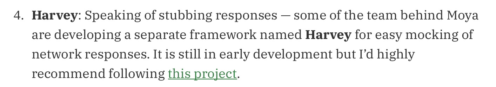

Open Source Adventures #4 - Harvey
Mar 5, 2019 19:50 · 4 minute read
The year 2018. I started the blog with a handful of success stories covered in my Open Source Adventures series. I thought that it would be entertaining to reflect upon each adventure and learn from my mistakes. Unfortunately, once I’ve got into a situation without a happy ending, I struggled. I couldn’t get a word out, and it saddened me deeply - so I stopped trying.
Burnout knocked into my door faster than expected. Funnily enough, I didn’t expect it at all. In hindsight, I know that I should’ve written the post and move on. I didn’t do it back then, but I’ve managed to do it this year.
Let me tell you a story about Harvey, Moya’s testing library.
Backstory
It all started in September 2017. We were looking for a network-response-stubbing library at Moya that could also support Swift Package Manager. OHHTTPStubs is an excellent tool, but it didn’t support SPM, and it wasn’t easy to do so back then.
I spoke to Ash about the idea of a new library under the Moya organization. He was very supportive (as always!), we picked a fitting name (fun fact: all of the repository names in Moya’s organization come from Farscape series), and I started tinkering.
I’ve spent the first few weeks on learning URLProtocol specs and how to provide stubbed responses using its API. Finally, I landed a Pull Request with a Proof of Concept and a few tests around it - I must say I was proud of that one.
Mid-life crisis
After the PoC there was only one feature left (plus some documentation and integration works). However, I felt like I needed a short break from Harvey, and started checking out other projects like Xiblint or Danger.
In the meantime, few people from the community got interested in Harvey and started contributing to the project. We’ve got documentation, vision file and even logo - all done pretty quickly. Then, Orta opened a PR with a Work In Progress version of his new project, Danger Swift. Around that time I was experimenting with Xiblint and also used Harvey as a playground. The project quickly transformed from network-response-stubber to more of a utility repository that we could play on.
The unavoidable
Few months passed by and I was back working on the missing pieces so we could release Harvey to the public. As I mentioned before, from the code perspective, we’ve only had one feature to implement - support for default URLSessionConfiguration`s. And, as you probably already know, this is when it all went downhill.
Predefined configurations (.default and .ephemeral) didn’t work properly, unless we swizzled them at the loading level. We couldn’t do it in Swift, as both load & initialize methods were not available anymore. This left us in a situation where we had to use Objective-C. It wasn’t an option, as we would duplicate the work done in OHHTTPStubs. Thus, we had two options: either we find a way of fixing it on a Swift level, or we close Harvey and support OHHTTPStubs instead.
I’ve created an issue on Harvey’s repository where I explained the problem. Asked some friends, used a lot of Swift voodoo, but I could sense that I would have to close the project eventually. After a long period of waiting in silence, I’ve added another comment to the issue. This time it was a death sentence on Harvey.
I wanted to delete the repository many times, but it was difficult. Each time I was hoping that there is a way of keeping it alive. That someone would chime in and help us go through it. That there was some hidden Swift feature or an SPM flag. None of that happened. And all I could think of was the number of hours I’ve wasted by not taking decisive action.
Then, a new blog post appeared on Ray Wenderlich with an introduction to Moya. Shai, when writing the post, created a discussion group with Steven and me so we could provide feedback before it was released. Only when it was out, though, I’ve noticed a note about Harvey:

Instead of asking Shai to update the part, I just vanished for another few months.
Unexpected finish
It was 2019 already. I woke up and decided that it was time. I had to close Harvey as quickly as possible and start maintaining projects that I abandoned. I deleted the repository on a whim and, unfortunately, I didn’t take any screenshots that I could add to this retrospection. How fitting!
Could I’ve done better? For sure.
Open Source Projects fail all the time. Be it lack of maintenance, ideas or motivation. Harvey failed because I didn’t do complete research before starting the project. I decided to do it on the fly and in the open. I don’t blame myself for this one, no.
What I could do better was a decisive action when I knew that this project wasn’t going places. It would make everyone more productive, myself included. People wouldn’t have been confused, and I wouldn’t need to explain why.
Now I know.